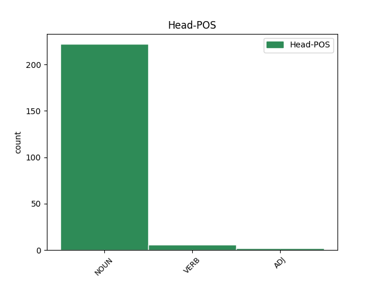

Distribution of features within this leaf

Agreement Rules sorted by frequency.
- When the dependent token is the conjunct(conj) of the head token, and the head token is NOUN and the dependent token is NOUN.
1 尺chǐ _ _ _ _ 0 _ _ _
2 ) _ _ _ _ 0 _ _ _
3 — _ _ _ _ 0 _ _ _
4 утын _ _ _ _ 0 _ _ _
5 хэмжээн _ _ _ _ 0 _ _ _
6 , _ _ _ _ 0 _ _ _
7 арбан _ _ _ _ 0 _ _ _
8 цун _ _ _ _ 0 _ _ _
9 гү _ _ _ _ 0 _ _ _
10 , _ _ _ _ 0 _ _ _
11 али _ _ _ _ 0 _ _ _
12 дэлгүүрэй _ _ _ _ 0 _ _ _
13 гуримаар гурим NOUN _ Case=Nom|Number=Plur 0 _ _ _
14 ( _ _ _ _ 0 _ _ _
15 市用制 _ _ _ _ 0 _ _ _
16 ) _ _ _ _ 0 _ _ _
17 0,3333 _ _ _ _ 0 _ _ _
18 меэтэр _ _ _ _ 0 _ _ _
19 , _ _ _ _ 0 _ _ _
20 барилгын _ _ _ _ 0 _ _ _
21 чии _ _ _ _ 0 _ _ _
22 , _ _ _ _ 0 _ _ _
23 нярбын _ _ _ _ 0 _ _ _
24 лангай _ _ _ _ 0 _ _ _
25 гуримаар гуримаар NOUN _ Case=Nom|Number=Plur 13 conj _ _
26 ( _ _ _ _ 0 _ _ _
27 營造庫平制 _ _ _ _ 0 _ _ _
28 ) _ _ _ _ 0 _ _ _
29 0,32 _ _ _ _ 0 _ _ _
30 меэтэр _ _ _ _ 0 _ _ _
31 . _ _ _ _ 0 _ _ _
1 Шүүхын _ _ _ _ 0 _ _ _
2 тогтолсоонь _ _ _ _ 0 _ _ _
3 Орос _ _ _ _ 0 _ _ _
4 уласта _ _ _ _ 0 _ _ _
5 холбооной _ _ _ _ 0 _ _ _
6 шүүгшэд шүүг VERB _ Case=Nom|Number=Plur 0 _ _ _
7 , _ _ _ _ 0 _ _ _
8 Үндэһэн _ _ _ _ 0 _ _ _
9 хуулиин _ _ _ _ 0 _ _ _
10 Шүүхын _ _ _ _ 0 _ _ _
11 газар _ _ _ _ 0 _ _ _
12 ( _ _ _ _ 0 _ _ _
13 хууль _ _ _ _ 0 _ _ _
14 ёсны _ _ _ _ 0 _ _ _
15 ) _ _ _ _ 0 _ _ _
16 гэшүүд гэш NOUN _ Case=Nom|Number=Plur 6 conj _ _
17 болон _ _ _ _ 0 _ _ _
18 анхан _ _ _ _ 0 _ _ _
19 шатын _ _ _ _ 0 _ _ _
20 шүүгшэдһээ _ _ _ _ 0 _ _ _
21 бүридэнэ _ _ _ _ 0 _ _ _
22 . _ _ _ _ 0 _ _ _
1 Томо _ _ _ _ 0 _ _ _
2 эрдэм _ _ _ _ 0 _ _ _
3 ухаанай _ _ _ _ 0 _ _ _
4 болон _ _ _ _ 0 _ _ _
5 соёлой соёла ADJ _ Animacy=Inan|Case=Ins|Gender=Fem|Number=Sing 0 _ _ _
6 түб түб NOUN _ Animacy=Inan|Case=Nom|Gender=Masc|Number=Sing 5 conj _ _
7 . _ _ _ _ 0 _ _ _
Disagree Examples:
1 « _ _ _ _ 0 _ _ _
2 Байкал _ _ _ _ 0 _ _ _
3 » _ _ _ _ 0 _ _ _
4 , _ _ _ _ 0 _ _ _
5 « _ _ _ _ 0 _ _ _
6 Сибирские _ _ _ _ 0 _ _ _
7 огни _ _ _ _ 0 _ _ _
8 » _ _ _ _ 0 _ _ _
9 , _ _ _ _ 0 _ _ _
10 « _ _ _ _ 0 _ _ _
11 Октябрь _ _ _ _ 0 _ _ _
12 » _ _ _ _ 0 _ _ _
13 гэхэ _ _ _ _ 0 _ _ _
14 мэтэ _ _ _ _ 0 _ _ _
15 сэтгүүлнүүдтэ сэтгүүлн NOUN _ Case=Nom|Number=Plur 0 _ _ _
16 , _ _ _ _ 0 _ _ _
17 хамтын _ _ _ _ 0 _ _ _
18 суглуулбаринуудта суглуулбаринууд NOUN _ Animacy=Inan|Case=Nom|Gender=Fem|Number=Sing 15 conj _ _
19 , _ _ _ _ 0 _ _ _
20 « _ _ _ _ 0 _ _ _
21 Иркутское _ _ _ _ 0 _ _ _
22 время _ _ _ _ 0 _ _ _
23 » _ _ _ _ 0 _ _ _
24 гэһэн _ _ _ _ 0 _ _ _
25 альманахта _ _ _ _ 0 _ _ _
26 тэрэнэй _ _ _ _ 0 _ _ _
27 зохёолнууд _ _ _ _ 0 _ _ _
28 толилогдоһон _ _ _ _ 0 _ _ _
29 байна _ _ _ _ 0 _ _ _
30 . _ _ _ _ 0 _ _ _
1 Брусничный _ _ _ _ 0 _ _ _
2 дух дух NOUN _ Animacy=Anim|Case=Nom|Gender=Masc|Number=Sing 0 _ _ _
3 , _ _ _ _ 0 _ _ _
4 черёмухи черёмух NOUN _ Animacy=Anim|Case=Nom|Gender=Masc|Number=Plur 2 conj _ _
5 дыханье _ _ _ _ 0 _ _ _
6 , _ _ _ _ 0 _ _ _
7 Лилового _ _ _ _ 0 _ _ _
8 багульника _ _ _ _ 0 _ _ _
9 настой _ _ _ _ 0 _ _ _
10 . _ _ _ _ 0 _ _ _
1 Дамдинжаповай _ _ _ _ 0 _ _ _
2 , _ _ _ _ 0 _ _ _
3 Ц. _ _ _ _ 0 _ _ _
4 Шагжинай _ _ _ _ 0 _ _ _
5 , _ _ _ _ 0 _ _ _
6 Ц. _ _ _ _ 0 _ _ _
7 Галановай _ _ _ _ 0 _ _ _
8 , _ _ _ _ 0 _ _ _
9 монгол _ _ _ _ 0 _ _ _
10 зохёолшо _ _ _ _ 0 _ _ _
11 С. _ _ _ _ 0 _ _ _
12 Удвалай _ _ _ _ 0 _ _ _
13 повесть _ _ _ _ 0 _ _ _
14 , _ _ _ _ 0 _ _ _
15 рассказ рассказ NOUN _ Animacy=Inan|Case=Nom|Gender=Masc|Number=Sing 0 _ _ _
16 , _ _ _ _ 0 _ _ _
17 зүжэгүүдые _ NOUN _ Case=Nom|Number=Plur 15 conj _ _
18 оршуулһан _ _ _ _ 0 _ _ _
19 байна _ _ _ _ 0 _ _ _
20 . _ _ _ _ 0 _ _ _
1 Зарим _ _ _ _ 0 _ _ _
2 тохёолдолдо _ _ _ _ 0 _ _ _
3 нүүрһэлиг _ _ _ _ 0 _ _ _
4 занар _ _ _ _ 0 _ _ _
5 , _ _ _ _ 0 _ _ _
6 асфальт асфальт NOUN _ Animacy=Inan|Case=Nom|Gender=Masc|Number=Sing 0 _ _ _
7 , _ _ _ _ 0 _ _ _
8 озокеритые _ _ _ _ 0 _ _ _
9 эндэ эндэ NOUN _ Case=Nom|Number=Plur 6 conj _ _
10 багтааха _ _ _ _ 0 _ _ _
11 бии _ _ _ _ 0 _ _ _
12 . _ _ _ _ 0 _ _ _
1 Институт _ _ _ _ 0 _ _ _
2 дүүргээд _ _ _ _ 0 _ _ _
3 В.В.Наговицын _ _ _ _ 0 _ _ _
4 Томскын _ _ _ _ 0 _ _ _
5 прибор _ _ _ _ 0 _ _ _
6 бүтээлгын _ _ _ _ 0 _ _ _
7 заводто _ _ _ _ 0 _ _ _
8 түрүүн _ _ _ _ 0 _ _ _
9 инженерээр инженер NOUN _ Animacy=Anim|Case=Ins|Gender=Masc|Number=Sing 0 _ _ _
10 , _ _ _ _ 0 _ _ _
11 удаань _ _ _ _ 0 _ _ _
12 комсомолой _ _ _ _ 0 _ _ _
13 комитедэй _ _ _ _ 0 _ _ _
14 секретаряар секретар NOUN _ Animacy=Anim|Case=Nom|Gender=Com|Number=Plur|Person=3 9 conj _ _
15 , _ _ _ _ 0 _ _ _
16 цехэй _ _ _ _ 0 _ _ _
17 даргын _ _ _ _ 0 _ _ _
18 орлогшоор _ _ _ _ 0 _ _ _
19 , _ _ _ _ 0 _ _ _
20 цехэй _ _ _ _ 0 _ _ _
21 даргаар _ _ _ _ 0 _ _ _
22 хүдэлhэн _ _ _ _ 0 _ _ _
23 байна _ _ _ _ 0 _ _ _
24 . _ _ _ _ 0 _ _ _